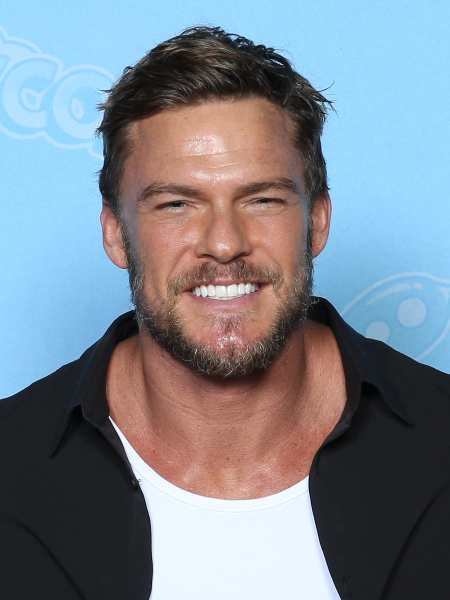

Von Super Festivals from Ft. Lauderdale, USA - file-storage_2022gcrichmond_1318220022, CC BY 2.0, https://commons.wikimedia.org/w/index.php?curid=117295665
Wer ist Alan Ritchson?
Alan Ritchson (* 28. November 1982 in Grand Forks, North Dakota) ist ein US-amerikanisches Model, Schauspieler und Sänger. Bekannt ist er in Deutschland vor allem wegen seiner Rolle als Thad Castle in der auf MTV ausgestrahlten Serie Blue Mountain State und der Titelrolle in der Serie Reacher des Streaming-Anbieters Prime Video.
Filmografie
- Teenage Mutant Ninja Turtles
- Die Tribute von Panem - Catching Fire
- Reacher
- ...